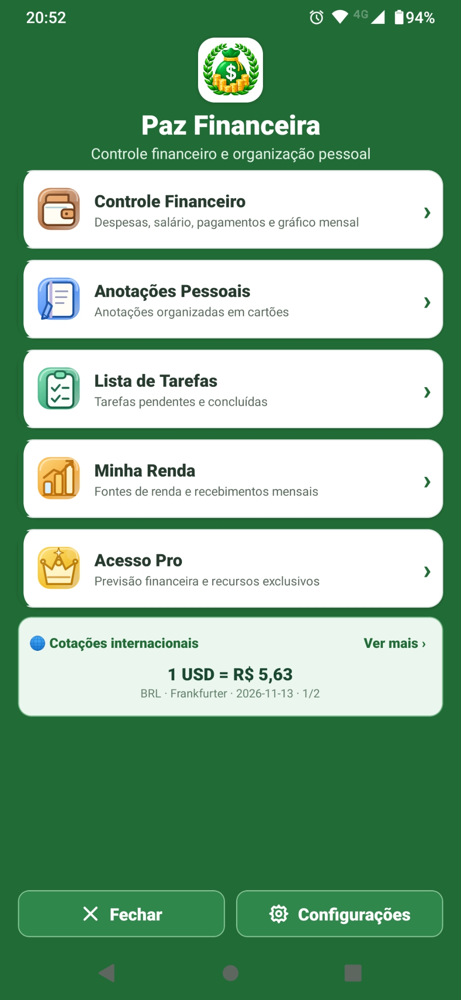

Controle financeiro
Cadastre despesas, salário, renda extra, contas recorrentes, parcelas e assinaturas mensais.
Paz Financeira · Controle financeiro e organização pessoal
Paz Financeira, anteriormente conhecido como MyMoney, MeuDinheiro e MiDinero, reúne controle financeiro pessoal, tarefas, anotações e lembretes em uma experiência simples e clara.
Paz Financeira é um aplicativo Android para controlar gastos, organizar renda, acompanhar contas, criar tarefas, registrar anotações e receber lembretes.
Controle financeiro e organização pessoal
Cadastre despesas, salário, renda extra, contas recorrentes, parcelas e assinaturas mensais.
Crie tarefas, lembretes e anotações pessoais em texto ou voz.
Acompanhe gráficos, calendário financeiro e indicadores do mês.
Proteja seus dados com PIN de 8 a 16 dígitos e armazenamento local criptografado.
Abaixo estão algumas telas reais do app em português, usadas para ilustrar o funcionamento de forma sutil e útil.


Assista ao vídeo oficial em português ou abra a playlist completa com os vídeos de todos os idiomas.
As funções principais de finanças, tarefas e anotações funcionam localmente. Alguns serviços externos dependem de conexão.
Sim. O app foi renomeado para Paz Financeira e mantém o mesmo pacote Android com.anspro.mymoney.app.
O rodapé traz o link para a versão detalhada da política em português.
Paz Financeira é um app Android para organização financeira pessoal e rotina. Pacote: com.anspro.mymoney.app · Contato: moneyproapp@gmail.com
Paz Financeira está disponível em português, inglês, espanhol, francês, alemão, italiano e indonésio.
Despesas, salário, renda extra, parcelas, assinaturas, contas recorrentes, pesquisa e acompanhamento dos pagamentos.
Previsão financeira, indicadores e gráficos, calendário, relatórios em PDF e recursos de poupança.
Lista de tarefas, percentuais de conclusão, anotações por texto, voz e digitalização de imagens com OCR local.
Acesso permanente por compra única: recursos adicionais, planejamento, diário pessoal e backup automático local.
PIN de 8 a 16 dígitos, biometria compatível, armazenamento estruturado criptografado e backups portáteis v4.
Lembretes locais para compromissos e contas; comunicados oficiais opcionais via Firebase em sete idiomas, nas versões compatíveis.
Quinze temas, incluindo Verde Clássico e Tema Escuro, com interface disponível em sete idiomas.
Recursos essenciais gratuitos com publicidade condicionada à configuração e à privacidade. O Pro remove banners e libera funções extras.
Controle suas despesas, renda, contas, tarefas e anotações em um só lugar.
Página oficial do aplicativo para Android. A instalação é feita pela Google Play.